Electrónica
Desde sus inicios hasta sus componentes básicos: la esencia de la electrónica en una sola mirada.
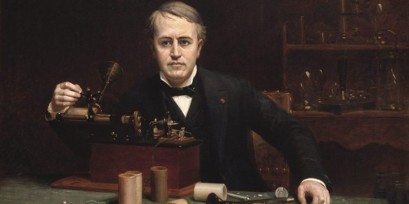
Historia de la Electrónica
La electrónica tiene sus raíces en los estudios de electricidad y magnetismo de los siglos XVIII y XIX, que permitieron comprender el comportamiento de las cargas. Con el descubrimiento del electrón y la invención de los primeros tubos al vacío —como el diodo y el triodo— surgió la electrónica inicial, usada en radios y sistemas de comunicación. El gran avance llegó en 1947 con el transistor, un dispositivo pequeño y eficiente que reemplazó las válvulas y marcó el inicio de la electrónica moderna. En la década de 1960 aparecieron los circuitos integrados, capaces de integrar muchos transistores en un solo chip, lo que dio origen a la microelectrónica y al desarrollo del microprocesador. Hoy, gracias a estos avances, la electrónica está presente en casi todos los dispositivos digitales, desde teléfonos y computadores hasta automóviles y satélites, impulsando una era tecnológica cada vez más inteligente.
Principios Físicos y Químicos
La electrónica se fundamenta en principios físicos como la Ley de Ohm, las Leyes de Kirchhoff y el electromagnetismo, que explican cómo se comportan las cargas, corrientes y campos dentro de un circuito. A nivel atómico, la mecánica cuántica permite entender las bandas de energía que determinan si un material es conductor, semiconductor o aislante. Desde la química, los avances provienen del estudio de los materiales semiconductores. El proceso de dopaje —añadir impurezas como fósforo o boro al silicio— permite crear dispositivos esenciales como diodos y transistores. Además, materiales avanzados como el GaAs o el GaN han impulsado tecnologías modernas de alta potencia y alta frecuencia.
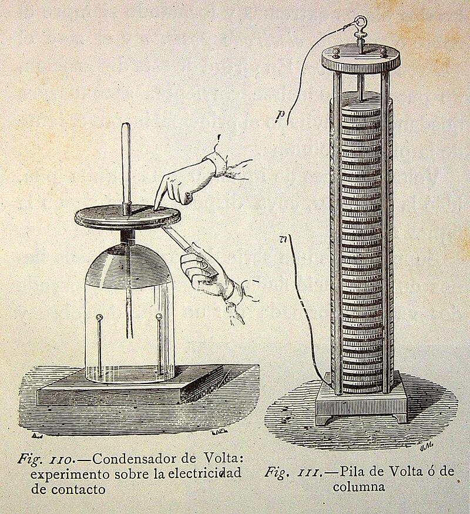
1800 – Pila de Volta
Primera fuente estable de corriente continua.
1831 – Inducción
Faraday descubre cómo generar electricidad.
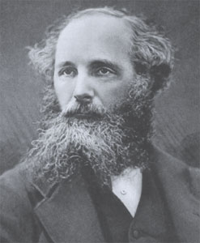
1864 – Maxwell
Unifica electricidad y magnetismo.
1897 – Electrón
Primer modelo del electrón por J.J. Thomson.
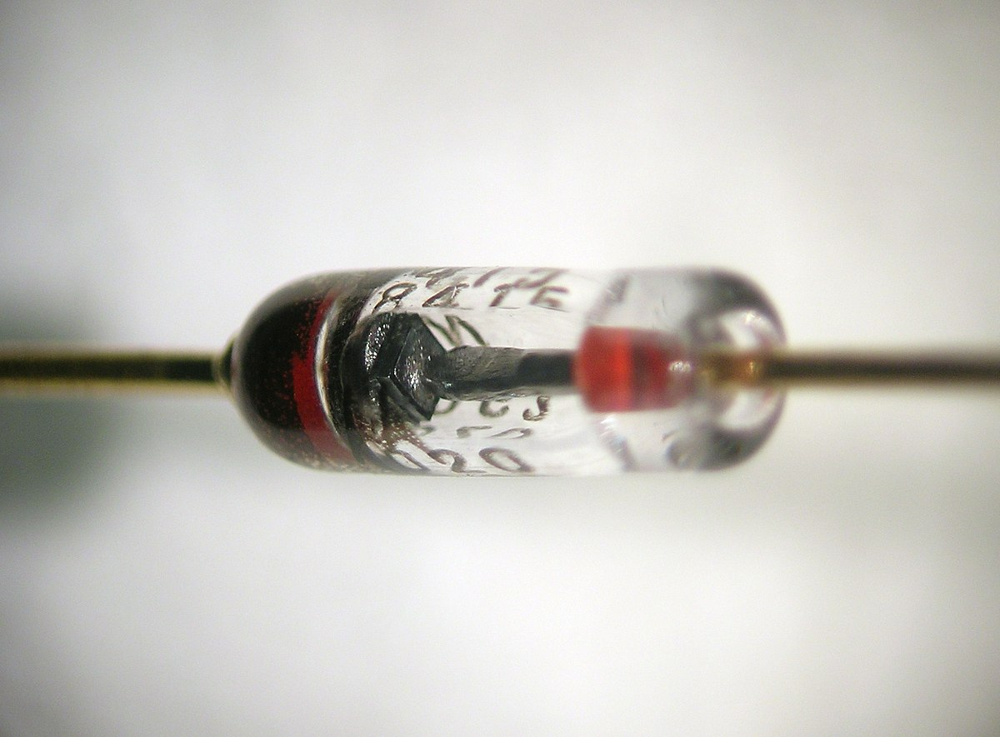
1904 – Diodo
Primer dispositivo electrónico de control.
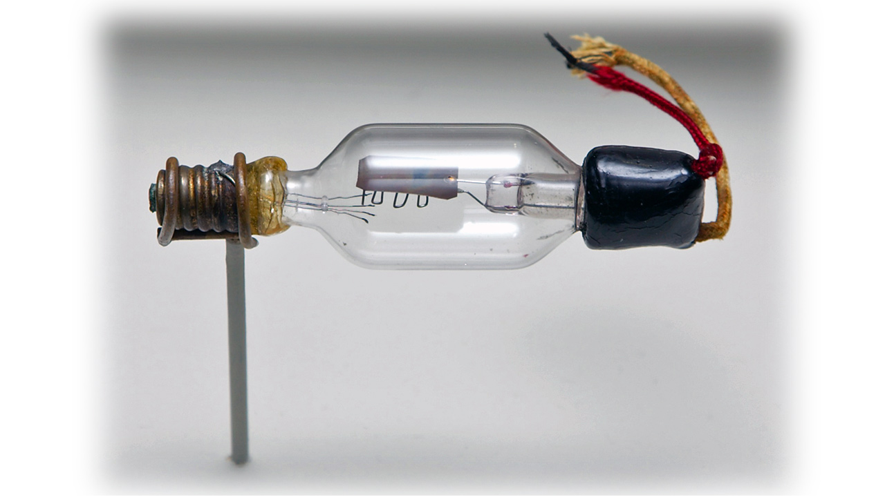
1906 – Triodo
Permite amplificar señales eléctricas.
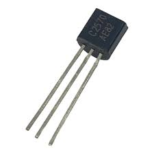
1947 – Transistor
Inicio de la era moderna de la electrónica.
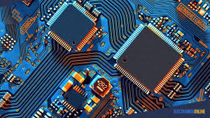
1958 – Circuito Integrado
Miniaturización de la electrónica.
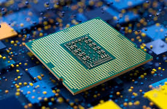
1971 – Microprocesador
Intel 4004 marca el inicio de la computación personal.
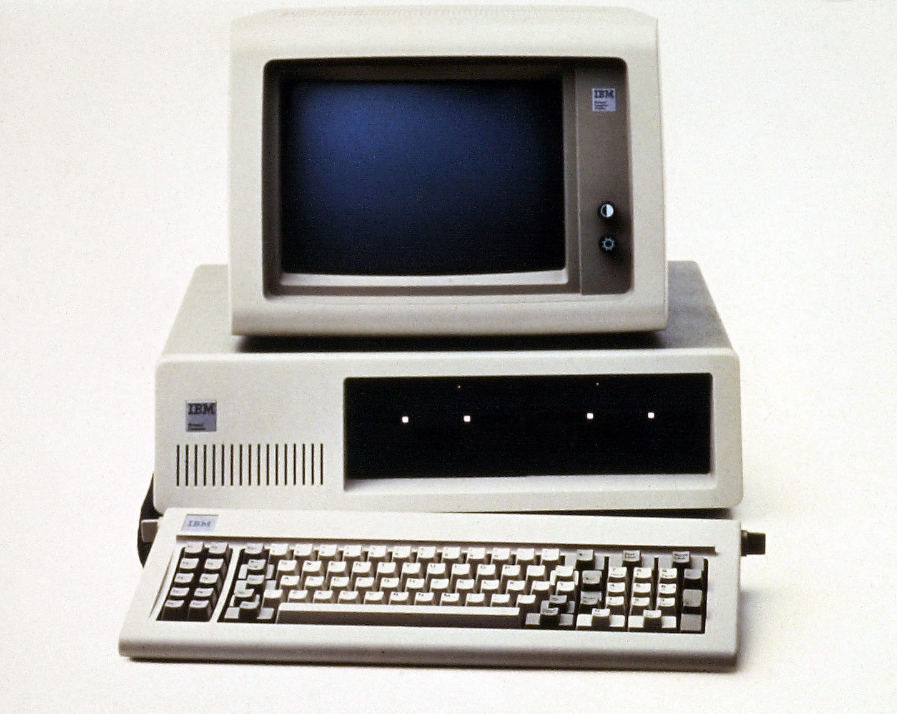
1981 – Computador Personal
Computadoras accesibles para el público general.

1990 – Internet Moderno
La web revoluciona comunicación y tecnología.
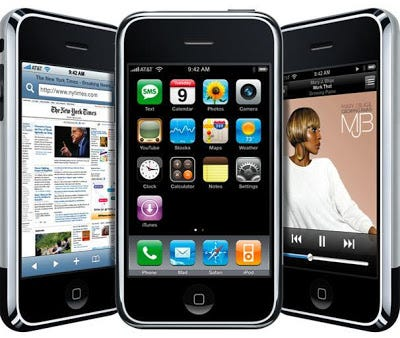
2007 – Smartphone
Nace la computación móvil con el iPhone.
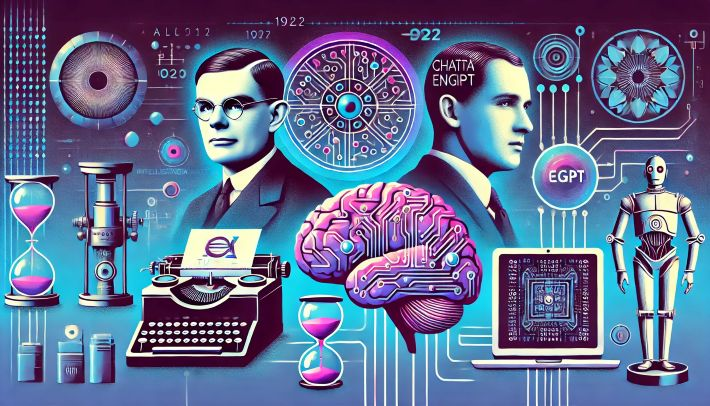
2012 – IA Moderna
Deep Learning inicia una nueva era tecnológica.
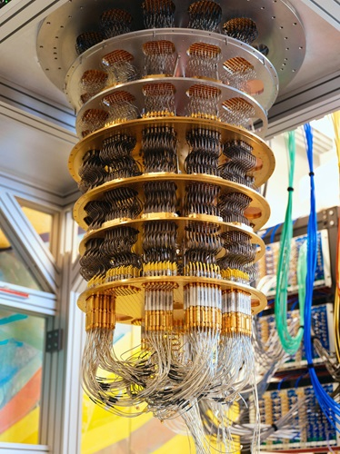
Actualidad – Computación Cuántica
Primeros avances prácticos en hardware cuántico.